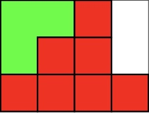
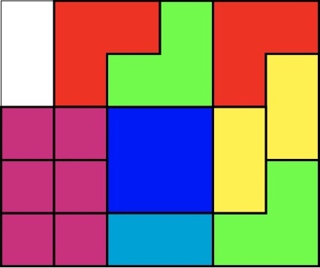

Project Euler 766
Project Euler 766
题目
Sliding Block Puzzle
A sliding block puzzle is a puzzle where pieces are confined to a grid and by sliding the pieces a final configuration is reached. In this problem the pieces can only be slid in multiples of one unit in the directions up, down, left, right.
A reachable configuration is any arrangement of the pieces that can be achieved by sliding the pieces from the initial configuration.
Two configurations are identical if the same shape pieces occupy the same position in the grid. So in the case below the red squares are indistinguishable. For this example the number of reachable configurations is \(208\).

Find the number of reachable configurations for the puzzle below. Note that the red L-shaped pieces are considered different from the green L-shaped pieces.

解决方案
令\(C=6,R=5\)。虽然题目允许一次滑动多格，但搜索时完全没必要直接枚举滑动 \(k\) 格。也就是说，只枚举每次滑动 \(1\) 格的操作，得到的可达状态集合与题目原定义完全相同。
原因在于，若某个拼块能沿某方向一次滑动 \(k\) 格（\(k\ge 2\)），这一步可以拆成 \(k\) 次合法的单位同方向滑动。反过来，若一连串单位滑动合法，那么显然也是题目允许的操作序列的一部分。
所以，题目可以等价改写为：从初始状态出发，反复执行某个拼块向上/下/左/右移动 \(1\) 格的合法操作，统计能到达的状态数。
这个等价化非常重要，因为它把转移形式固定成了常数种。
然而，棋盘有 \(30\) 个格子，拼块种类多、形状不一、且有同类不可区分约束。若直接用二维数组改动和字符串哈希的方式虽然也能做，但常数很大，状态数又在百万级，容易卡在状态表示与碰撞检测上。
因此需要更强的状态表示，核心目标是：快速判断某块能否移动（最好是位运算）；快速生成新状态；天然支持同类拼块不可区分（规范化）
那么我们考虑使用位运算解决。将 \(C\times R\) 棋盘按行优先编号为 \(0,\dots,RC-1\)，即第 \(r\) 行第 \(c\) 列对应格子编号 \(id=Cr+c.\)
这样一个拼块占据的所有格子，就可以表示成一个 \(30\) 位二进制掩码：第 \(id\) 位为 1 表示该拼块覆盖该格。例如：单格块占一个 \(1\) 位；骨牌占两个 \(1\) 位；\(L\) 块占三个 \(1\) 位；\(2\times 2\) 方块占四个 \(1\) 位。
因为编号是按行优先，向四个方向移动 \(1\) 格恰好对应固定的位移。向左：右移 1 位；向右：左移 1 位；向上：右移 \(C\) 位；向下：左移 \(C\) 位。
这意味着移动后拼块形状不需要重新构造，直接做一次位移即可。这一步把几何问题转化成了纯位运算问题。
然而，题目还需要同类拼块不可区分，因此必须规范化状态。也就是说，如果我们给每个拼块固定编号，那么当两个红 \(L\) 交换位置时，程序会把它们当作两个不同状态，导致重复计数。但题目明确说它们是相同配置。
因此，考虑按类型分组存储。把所有拼块按颜色和形状分组，每组保存若干个位掩码，并在每次转移后对该组排序，作为该组的规范表示。
本题可分为以下类型。红色 \(L\)：\(2\) 个，绿色 \(L\)：\(2\) 个，竖向长度为 \(2\) 的骨牌：\(2\) 个；横向长度为 \(2\) 的骨牌：\(1\) 个；\(2\times 2\) 方块：\(1\) 个；单格块：\(6\) 个；再加上两个空格（后面单独保存）。
可见组内排序就够了，因为同类型拼块之间唯一的区别只是命名顺序，而排序后这种标号差异就被消掉了。于是同类交换位置后的状态会映射到同一个规范表示；异类拼块仍然在不同组，不会误合并。
棋盘上恰好有两个空格。与其每次把所有拼块 OR 起来再取反，不如直接维护一个 OPEN 掩码（两个 \(1\) 位）。
这样判断某块能否移动会非常自然。设当前要移动的拼块掩码为 \(P\)，空白掩码为 \(E\)。对于这个拼块来说，允许被占据的位置是它自己当前的位置和空格位置，即：\(\text{occ}=P\cup E.\)如果朝某方向移动后得到 \(P'\)，那么合法当且仅当：不出界；\(P'\) 的所有格子都在 \(\text{occ}\) 中（即目标位置不是别的拼块）。也就是：\(P' \subseteq (P\cup E)\)这一步完全不需要遍历格子，只要用位运算做包含判定即可。
接下来说明合法移动判定的推导，以向右移动 \(1\)
格为例。如果某拼块在最右列上已经有格子，那么它不能右移。设最右列掩码为
\(\text{RM}\)，则条件为\(P \cap \text{RM} = \varnothing.\)右移后得到
P' = P << 1。要求目标位置只能落在 \(\text{occ}=P\cup E\) 上：\(P' \subseteq \text{occ}.\)等价于：\(P' \cap \overline{\text{occ}} =
\varnothing.\)同理可得左、上、下三个方向。
当某个拼块从 \(P\) 移到 \(P'\) 后，除了这个拼块和空白外，其他拼块都不变。空白集合更新很简单：原来 \(P\) 占据的位置会腾空，新位置 \(P'\) 会被占用。
因此新空白为\(E' = E \oplus P \oplus P'.\)这里用异或是因为：\(P\) 中那些位原来不在 E，现在要加入；\(P'\) 中那些位原来在 E，现在要删去；其余位不变。然后对所属类型组做一次排序，得到新状态的规范表示，放入哈希集合去重即可。
综上，本题只需按照上述思路建立状态表示与转移规则，并在状态图上进行 BFS，即可统计所有可达配置数。
代码
1 |
|